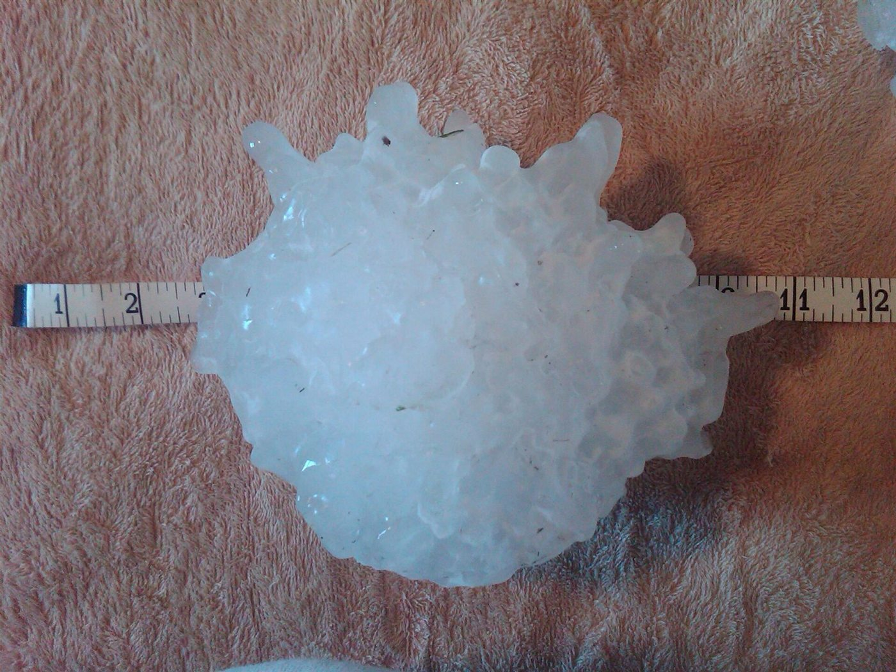

Corrientes ascendentes en el cumulonimbo; las granizadas de Mendoza y Córdoba
En pleno verano, con 30 grados en la calle, puede caer hielo del cielo. Para eso hace falta una tormenta capaz de sostener una piedra de hielo en el aire durante el tiempo suficiente para que crezca. Mendoza y Córdoba conocen bien el resultado: el centro de Argentina tiene algunas de las tormentas más intensas del mundo.
El granizo es hielo sólido que se forma dentro de las corrientes ascendentes de una tormenta [1]. Las piedras se forman cuando esas corrientes llevan gotas hacia zonas muy frías de la atmósfera, donde se congelan. Después crecen chocando con gotas líquidas que se congelan sobre su superficie [1]. El Laboratorio Nacional de Tormentas Severas de Estados Unidos enumera tres ingredientes para el granizo grande: una corriente ascendente que mantenga la piedra en el aire el tiempo necesario, suficiente agua sobreenfriada cerca de ella y algo donde crecer, un pedazo de hielo, nieve o polvo [2].
El agua sobreenfriada sigue líquida por debajo de 0 °C. Se congela de golpe al tocar la piedra, atrapa burbujas y deja hielo opaco; si se congela despacio, deja hielo transparente [1].
La piedra cae cuando pesa demasiado para que la corriente ascendente la sostenga [1][2]. Cuanto más fuerte es la corriente, más grande puede crecer [2]. El límite se calcula igualando el peso con el arrastre:
Para una piedra de 4 centímetros de diámetro, tratada como una esfera lisa, con ρh = 900 kg/m³, ρa = 1 kg/m³ y C = 0,45, da unos 32 m/s (un cálculo propio). Es decir: sostenerla exige una corriente ascendente de más de 110 km/h. El radio entra con raíz cuadrada: para duplicar el tamaño, la corriente debe ser un 40 % más rápida. Esas velocidades salen de la energía que se describe en la estabilidad atmosférica.
La pelota en el secador: como la pelota sostenida en un chorro de aire, la piedra de granizo flota mientras el aire que sube la frene lo suficiente. Pero esta pelota va engordando: tarde o temprano, la corriente no la aguanta más.

Las piedras grandes, cortadas al medio, muestran capas claras y opacas, como una cebolla. Suele decirse que cada capa es un viaje arriba y abajo por la nube. El laboratorio de la NOAA lo niega: las capas aparecen porque la piedra encuentra distintas temperaturas y contenidos de agua líquida, algo que cambia al pasar de costado por la corriente ascendente, y no se deben simplemente a ciclos de subida y bajada [1]. Además, los vientos horizontales pueden alejar de la corriente a las piedras más chicas, y por eso el granizo más grande suele caer más cerca de ella [1].
Según H. Bechis y colegas, las observaciones por satélite indican que las tormentas del sudeste de Sudamérica están entre las más intensas y profundas del mundo [3]. Una climatología basada en informes encontró que la zona principal de granizo frecuente en Argentina está en Mendoza y se extiende hacia Córdoba y las llanuras centrales [3].
En Mendoza, el granizo daña bienes y la economía agrícola, con pérdidas del 10 % de la producción agrícola anual [3]. El granizo de más de 2 centímetros causa el 80 % de los daños agrícolas de la región, con solo 2 o 3 eventos por año [3]. La campaña RELAMPAGO-CACTI, desplegada entre octubre de 2018 y abril de 2019, midió por primera vez una granizada severa en Mendoza con múltiples plataformas: el 26 de noviembre de 2018, piedras de 4 centímetros de diámetro cayeron sobre amplias zonas de la provincia [3]. En Córdoba, en la misma campaña, R. Trapp y colegas estudiaron una supercelda cerca de las Sierras de Córdoba, cuyo granizo dañó la antena de un radar de la campaña [4].
Montañas y tormentas: Bechis y sus colegas señalan que la interacción con la topografía crea en esta región condiciones únicas para el inicio de tormentas severas [3], y que las de Mendoza tienen semejanzas con las del este de las Montañas Rocosas [3].
El granizo es hielo que crece sostenido por una corriente de aire. Mientras la corriente ascendente aguanta el peso, la piedra junta agua sobreenfriada; cuando deja de aguantar, cae. Las capas cuentan por dónde pasó, no cuántas veces subió. Y en el centro de Argentina, con sus montañas y su aire inestable, ese mecanismo produce algunas de las tormentas más severas del mundo.
Pregunta para la comunidad: Una esfera de hielo real no es lisa: tiene protuberancias y forma irregular. ¿Cómo cambiaría eso el coeficiente de arrastre y la velocidad de caída? ¿Sería más o menos peligrosa?